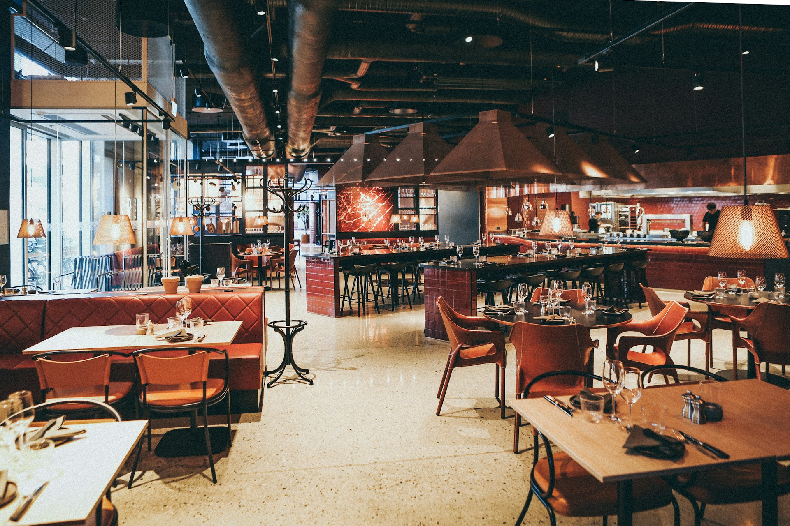

Thistle & Heather Tavern
 Embark on a Gastronomic Journey at Thistle & Heather Tavern: Where Scottish Tradition Meets Culinary Innovation!
Welcome to Thistle & Heather Tavern, where the warm embrace of Scottish hospitality meets the culinary delights of the Highlands. Nestled in the heart of Edinburgh's historic Old Town, our restaurant offers a cozy and inviting atmosphere, perfect for a gathering of friends or a romantic evening out.
Indulge in a menu inspired by Scotland's rich culinary heritage, featuring traditional dishes with a modern twist. From hearty stews made with locally sourced ingredients to succulent Scottish salmon grilled to perfection, every bite tells a story of the land and sea that surrounds us.
Pair your meal with a fine selection of Scotch whiskies from renowned distilleries across the country, or choose from our curated list of Scottish ales and craft beers. Our knowledgeable staff is always on hand to guide you through our extensive drinks menu, ensuring a truly immersive dining experience.
Whether you're a visitor to Scotland or a local looking for a taste of home, Thistle & Heather Tavern invites you to savor the flavors of this beautiful land in every dish we serve.
Adress: Thistle & Heather Tavern, 42 Royal Mile, Edinburgh, EH1 1QN, Scotland